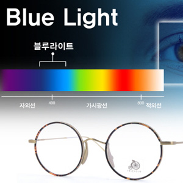
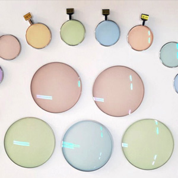
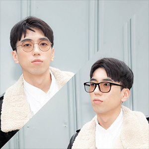
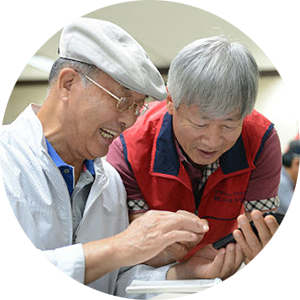
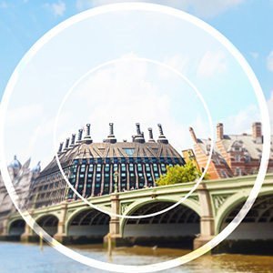

Home > 차별화 시스템 > 연령별 맞춤안경
연령별 맞춤안경
실내에서 독서를 하거나, 온라인 강의를 듣는 근거리 작업이 많아, 눈이 쉽게 피곤함을 느낌
스마트폰, PC 등의 사용으로 인하여 블루라이트(청색광)에 많이 노출되어 눈의 피로나 두통 호소
읽기 속도가 느려서 읽기 능력이 조금 떨어지신 분
10대 추천상품
- 눈의 피로 감소 기능성 렌즈
- 눈의 안구운동 기능을 보완해 주어,
피곤한 눈을 편안하게 풀어주는 렌즈
- 근시 완화 렌즈
- 선명한 원거리와 근거리 작업 시
편안하게 잘 볼 수 있도록 해주는 렌즈

- 청색광 감소 렌즈
- 태양광선, 인조조명, TV, 컴퓨터,
스마트폰 화면에서 많이 발생하는
청색광(블루라이트)을 감소시키는 렌즈

- 내 눈에 맞는 색상 렌즈
- 눈에 맞는 안경렌즈 색을 vcs 시스템
정밀 검사를 통해서 나만의 컬러를 입혀
시각적 불편함을 해결해주는 렌즈
오랫동안 컴퓨터 및 서류 업무로 인한, 어깨 결림 및 두통 호소
스마트폰, PC 등의 사용으로 인하여 청색광(블루라이트)에 많이 노출되어 눈의 피로나 두통 호소
야외 레저 활동으로 UV 차단 선글라스 착용
읽기 속도가 느려서 읽기 능력이 조금 떨어지신 분
20~30대 추천상품
- 눈의 피로 감소 기능성 렌즈
- 눈의 안구운동 기능을 보완해 주어,
피곤한 눈을 편안하게 풀어주는 렌즈

- 변색 렌즈
- 시간과 장소에 관계 없이 색상과 농도가
햇빛의 양에 따라 자유자제로 변하여,
이동시 편리하게 사용할 수 있는 렌즈
- 청색광 감소 렌즈
- 태양광선, 인조조명, TV, 컴퓨터,
스마트폰 화면에서 많이 발생하는
청색광(블루라이트)을 감소시키는 렌즈
- 내 눈에 맞는 색상 렌즈
- 눈에 맞는 안경렌즈 색을 vcs 시스템
정밀 검사를 통해서 나만의 컬러를 입혀
시각적 불편함을 해결해주는 렌즈
- 

43세 이상 노안으로 멀리 가까이를 한번에 다 볼 수 있는 렌즈 필요
TV 나 휴대폰 등의 사용으로 인하여 블루라이트(청색광)에 많이 노출되어 눈의 피로나 두통 호소
등산, 골프 등의 레저활동 시 어지러움 호소
40대 이상 추천상품

- 개인맞춤형 누진다초점렌즈
- 멀리 가까이를 한번에 다 볼 수 있는
렌즈로, 본인의 라이프스타일에 따라
사무용, 활동성 등의 렌즈 선택 가능
- 변색 렌즈
- 시간과 장소에 관계 없이 색상과 농도가
햇빛의 양에 따라 자유자제로 변하여,
이동시 편리하게 사용할 수 있는 렌즈
- 청색광 감소 렌즈
- 태양광선, 인조조명, TV, 컴퓨터,
스마트폰 화면에서 많이 발생하는
청색광(블루라이트)을 감소시키는 렌즈